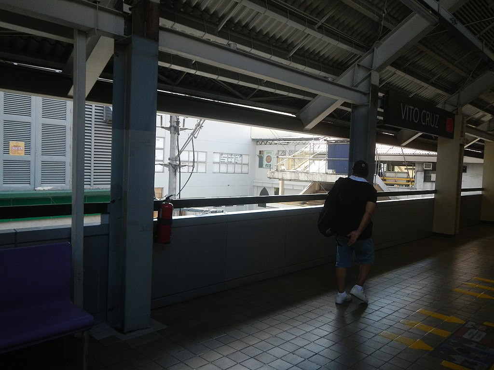

Vito Cruz
LRT-1 station
Vito Cruz station is an elevated Light Rail Transit (LRT) station located on the LRT Line 1 (LRT-1) system in Malate, Manila City. It is the 1st station going north and the last station going south to lie within Manila City bounds. It is also the 10th station for trains headed to Fernando Poe Jr. and the 16th station for trains headed to Dr. Santos. The station takes its name from the old name of the nearby Pablo Ocampo Street, which was named after Hermogenes Vito Cruz, a former alcalde mayor of Pasay City (c. 1871).
| Vito Cruz | |||||||
|---|---|---|---|---|---|---|---|
|  | |||||||
| General information | |||||||
| Location | Taft Avenue, Malate, Manila, Metro Manila, Philippines | ||||||
| Owned by |
|
||||||
| Operated by | Light Rail Manila Corporation | ||||||
| Line(s) | LRT Line 1 | ||||||
| Platforms | 2 (2 side) | ||||||
| Tracks | 2 | ||||||
| Connections | None | ||||||
| Construction | |||||||
| Structure type | Elevated | ||||||
| Parking |
|
||||||
| Bicycle facilities | No | ||||||
| Accessible |
Concourse: All entrances
Platforms: All platforms |
||||||
| Other information | |||||||
| Status | Operational | ||||||
| Station code | VC | ||||||
| History | |||||||
| Opened | December 1, 1984 | ||||||
| Services | |||||||
|
|||||||
The station was opened to the public on December 1, 1984, as part of LRT's inaugural southern section, known as the Taft Line.
Buses serving the Taft Avenue route, taxis, jeepneys, UV Express, and pedicabs stop near the station. Some destinations, such as St. Scholastica's College, are within walking distance from the station. There is also a Philippine National Railways station of the same name, although the station is far from the station, requiring a commute from the station.
The station is near some major landmarks, such as the Bangko Sentral ng Pilipinas complex, the University Mall shopping center, and the Rizal Memorial Sports Complex. The Cultural Center of the Philippines Complex is near this station as well, although commute is also an option due to its distance. Located in this complex are the CCP Main Building, the Philippine International Convention Center, Folk Arts Theater, Manila Film Center, MBC Building, Star City, Aliw Theater and the Harbour Square.
The station is also close to some educational institutions, such as the main campus of Arellano University School of Law, De La Salle University, De La Salle–College of Saint Benilde, and St. Scholastica's College. The southbound concourse of the station is connected to the adjacent University Mall, but is currently blocked off as the entrance has since been converted into tenant space. The station was also near Harrison Plaza, which was demolished for a redevelopment by SM Prime.
Vito Cruz station is notorious for its unusually high number of suicide attempts. As a result, the LRTA has imposed a "speed limit" on trains entering stations to deter the number of successful suicides.
| Operational | |
|---|---|
|
Dr. Santos
Ninoy Aquino Asia World MIA Redemptorist Baclaran EDSA Libertad Gil Puyat Vito Cruz Quirino Pedro Gil |
United Nations
Central Carriedo Doroteo Jose Bambang Tayuman Blumentritt Abad Santos R. Papa 5th Avenue Monumento Balintawak |
| Fernando Poe Jr. | |
| Under construction | |
|
Las Piñas
Zapote |
Niog
North Triangle |